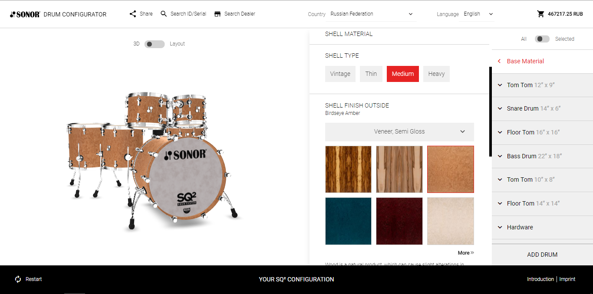

-
Немецкая компания Sonor запустила конфигуратор дизайна барабанных установок custom класса.
 Подробнее... -
"Библия по настройке барабана" или что нужно знать чтобы найти свой или правильный звук"
Подробнее... -
Jojo Mayer "Секретное оружие для современного барабанщика". Школа которую должен пройти каждый.
Подробнее...